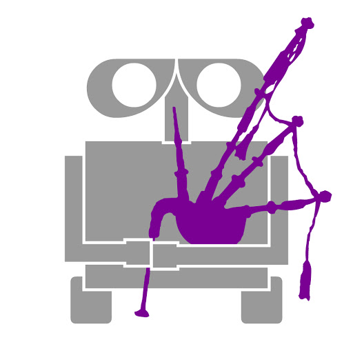

A Brief Summary
Scotbotics was founded in 2009 by Morgan Tenney and Forrest Yeh during their sophomore years at Piedmont High School in Piedmont, California. During its initial years, Scotbotics was affiliated with Piedmont High School but because it lacked a space to work, the team created its own workshop in a member’s garage. Since its founding, all of the original team members have graduated. This year is Scotbotics’ twelfth year anniversary since its founding, and we were the oldest team in 2019’s FIRST regional competition.

The old Scotbotics logo
Considering their shortage of resources and the fact that they are entirely student run, Scotbotics has shown incredible success since its founding in 2009. Scotbotics has attended the FIRST Tech Challenge world championships twice-- once in Atlanta during its rookie year for the 2009-2010 game
HotShot! and again in St. Louis for the 2012-2013 game
Ring It Up!-- and also attended the very first Western Super Regionals in the 2013-2014 game
Block Party!
Recently in 2019, Scobotics attended FIRST's regional competition for
Rover Ruckus and placed in the middle of the pack.
Since its early years, Scotbotics has decided to show its spirit through kilts worn at competitions, the purple and gold colors of the robot and the team’s name-- because Piedmont High School’s mascots are the Highlanders and the Scotsman and its color is purple. During the
Ring It Up! season, two fellow scotbots created a purple hat using 3D printers in order to represent their enthusiasm and pride for the Scotbotics team and incorporate other teams through curiosity and humor. This spirit meshes nicely with the Scotbotics theme, which is to have fun and create a close-knit community of teenagers with similar passions.
Our Mission: Not only do we want to build a robot but we also want to incorporate fun and rewarding experiences, spreading gracious professionalism and spirit to others.
Historical Links